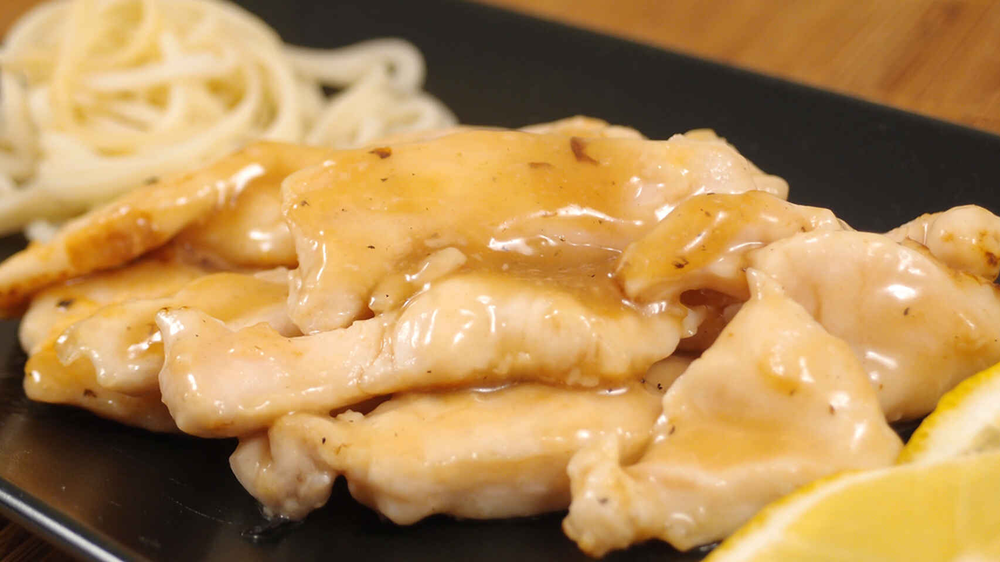

Pollo al limón al estilo chino

Receta de pollo al limón
Para vencer a la tentación de llamar al chino les propongo esta pechuga de
pollo al limón que tardaras menos en preparar en casa de lo que tarda el
chino en aparcar la moto.
Ingredientes:
Para el marinado:
- 400gr de filete de pechugas de pollo
- sal
- 1 clara de huevo
- 2 cucharaditas de maicena
- aceite
Para la salsa:
- 2 cucharaditas de maicena
- 2 cucharadas soperas de agua
- 6 cucharaditas de azucar o edulcorante
- 2 cucharadas soperas de zumo de limón
- 1/4 de taza de caldo de pollo
- 2 cucharaditas de salsa de soja
- 1 cucharadita de vino blanco
Receta paso a paso:
-
Lo primero que haremos será el marinado de la carne, que en realidad va
a ser como una especie de tempura diferente; en un bol grande ponemos la
clara de huevo (yo uso de las pasteurizadas y así no tengo una yema por
ahí de sobra rondando en la nevera hasta el momento de tirarla) y las
dos cucharaditas de maicena y removemos bien.
-
Sazonamos los filetes de pollo y los cortamos en trozos o tiras, no
demasiado grandes. Los incorporamos a la mezcla de clara de huevo y
maicena y revolvemos para que todos los trozos se pringuen bien.
Reservamos en el frigo durante al menos media hora.
-
Una vez ha transcurrido este tiempo, nos disponemos a dorar los trozos
de pollo marinados. Si no te asustan las calorías, puedes freirlos en
abundante aceite caliente. Si te apetece controlar un poco, puedes
dorarlos en una sartén antiadherente con una cucharadita de aceite
solamente.Cuando los tenemos todos hechos, reservamos.
-
A continuación, en una olla vamos a preparar la salsa: Disolvemos las
dos cucharaditas de maicena en las dos cucharadas soperas de agua. Luego
echa la maicena y dale vueltas con una cuchara como , cuando esté bien
disuelta, écha el contenido del vaso a la olla. Seguidamente, echamos el
resto de ingredientes (azúcar, limón, vino, caldo y soja) y llevamos a
ebullición. ¡¡CUIDADO!! Entre el azúcar y la maicena esta salsa liga
rapidísimo, así que no te despistes ni un momento porque tendremos el
espesor que queremos en un segundo.
-
Con la salsa ya ligada, añadimos los trozos de pollo que teníamos
reservados y removemos bien para que se unten de salsa por todas partes
- Sirve bien caliente acompañado de un arroz o unos fideos